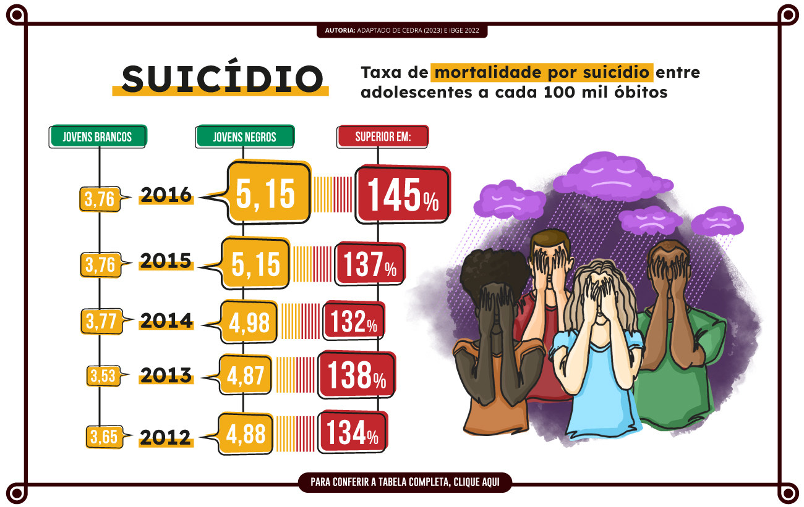

Educacionais Antirracistas
Este Recurso Educacional Aberto (REA) não tem a intenção de esgotar as diversas manifestações do racismo no contexto educacional. Educadores podem (e devem) continuar a refletir sobre o uso de expressões e comentários racistas, a invisibilidade do corpo negro, gestos que podem ser considerados desrespeitosos, sentimentos de inferioridade e não pertencimento, assim como os temas eurocêntricos nos trabalhos escolares. Também é crucial abordar os constrangimentos enfrentados pelos estudantes negros dentro e fora de nossas instituições ao realizar atividades educacionais.
Além disso, instituições de ensino devem ter Políticas para Educação das Relações Étnico-Raciais e para o Ensino de História e Cultura Afro-brasileira, Africana e Indígena, nos termos da Lei N° 9.394/96, com a redação dada pelas Leis N° 10.639/2003 e N° 11.645/2008, e da Resolução CNE/CP N° 1/2004, fundamentada no Parecer CNE/CP N° 3/2004.
Letramento racial é uma abordagem que não se restringe ao ensino convencional. Seu objetivo é preparar os indivíduos para reconhecerem, analisarem e questionarem as dinâmicas raciais em diferentes contextos, para combaterem o preconceito e se tornarem agentes de mudança, promovendo uma sociedade mais justa e inclusiva.
Estamos cientes de que não há uma hierarquia de racismo. Como não é possível falar de todos os grupos em situações de opressão étnica, no espaço limitado deste recurso educacional, este REA está direcionado para a população negra por conta das políticas governamentais e institucionais já existentes.
Vamos refletir sobre algumas manifestações de racismo e sobre as orientações que o educador deve seguir?
O racismo é fato histórico e social concreto que tem como espinha dorsal formas de violência direcionadas contra povos oprimidos. No contexto brasileiro, essas agressões atingem afro-brasileiros e indígenas, enquanto, globalmente, testemunhamos sua ocorrência contra nativos árabes, latino-americanos, russos e, de maneira geral, contra povos asiáticos e africanos.
Sua causa e base de sustentação são econômicas, isto é, o racismo foi e continua sendo uma ferramenta para angariar vantagens econômicas por parte da classe dominante e manter a divisão na classe trabalhadora por meio de tensões entre diferentes grupos étnicos. Um exemplo marcante dessa violência — e talvez seu maior marco — foi a instituição da escravidão.
No Brasil, observamos os sintomas do racismo por meio da atribuição anticientífica de características inferiores a determinadas etnias, uma prática que visa justificar a exploração desses grupos. Além disso, somos confrontados com as consequências diretas dessa realidade, refletidas na violência policial e na marginalização social.
Uma educação antirracista não se limita em conscientizar sobre equidade e evitar casos gerais de bullying. Ela visa utilizar a educação como ferramenta ativa para autossuficiência e empoderamento econômico da população negra, contribuindo para promoção e valorização histórica e cultural das comunidades negras, ao mesmo tempo que serve como instrumento de consciência política sobre as estruturas de poder e, por fim, destacando a premente necessidade de autodefesa da população negra diante das diversas agressões sociais.
- Escuta ativa: ouve atentamente as experiências e perspectivas das pessoas que enfrentam o racismo de forma aberta para aprender com essas vivências, questionando suas próprias crenças e atitudes;
- Aprendizado e reflexão constantes: busca aumentar sua compreensão sobre as estruturas do racismo, sobre aspectos históricos e culturais de povos ou personalidades negras ao mesmo tempo que crítica a própria normalidade étnica na qual está inserido;
- Age em nível institucional: toma ações por mudanças estruturais e políticas que promovam a igualdade racial em instituições, empresas e governos;
- Participa e apoia iniciativas antirracistas: contribui ativamente em causas e movimentos que trabalham pela equidade racial. Isso pode envolver voluntariado, coletivos ou, simplesmente, apoiar e divulgar iniciativas relevantes;
- Não se silencia frente ao racismo: está permanentemente engajado a enfrentar qualquer comportamento ou atitude individual ou institucional racista de forma a defender a dignidade da população negra.
Navegue entre as perguntas através das setas laterais.
1
Você deseja ser reconhecido(a) em sua área profissional como alguém empenhado na luta contra o racismo?
Para mim, lutar contra o racismo é uma missão que tenho para promover igualdade e diversidade em todas as esferas da minha vida e espero que este meu empenho tenha como resultado o reconhecimento.
Estou aberto(a) a contribuir para a conscientização sobre o racismo, desde que seja feito de maneira respeitosa e inclusiva.
Seja na vida pessoal ou profissional, quando nos propomos a trilhar um caminho, é natural almejar o reconhecimento não só por nossas habilidades técnicas, mas também pelo comprometimento com causas sociais, como a luta contra o racismo. Ser reconhecido nesse contexto não apenas reforça a nossa imagem profissional, mas também reflete nossos valores mais profundos.
Navegue entre as perguntas através das setas laterais.
2
Como a luta contra o racismo se relaciona com seus valores e suas atitudes?
A luta contra o racismo está intrinsicamente ligada aos meus valores e atitudes. Acredito na igualdade e na importância de criar um ambiente em que todos se sintam valorizados, independentemente de sua origem étnica.
O racismo é uma questão relevante que deve ser considerada à luz dos valores e das atitudes de cada indivíduo.
A relação entre a luta contra o racismo e os nossos valores é inextricável. Essa luta transcende o âmbito profissional, conectando-se diretamente com nossas convicções éticas e morais. Desenvolver habilidades antirracistas no ambiente de trabalho sem levar em consideração valores e atitudes é, na verdade, algo incompleto. A base para uma atuação efetiva reside na congruência entre nossas convicções e nossas ações cotidianas.
Navegue entre as perguntas através das setas laterais.
3
É possível desenvolver habilidades antirracistas no ambiente profissional sem considerar os valores e as atitudes?
É crucial no desenvolvimento de habilidades antirracistas no ambiente profissional engajar as pessoas a partir de seus valores. Para isso, a instituição deve promover a sensibilização e implementar ações que combatam ativamente o racismo no local de trabalho. Ao alinhar essas ações com os valores individuais, construímos uma base sólida para uma cultura inclusiva e equitativa.
Acredito que é possível desenvolver habilidades antirracistas no ambiente profissional, desde que seja feito de maneira a respeitar a diversidade de valores e atitudes já presentes na equipe.
Desenvolver habilidades antirracistas no ambiente profissional vai além de questões técnicas, envolvendo, profundamente, valores e atitudes individuais. Aqueles que já possuem valores voltados para justiça social, igualdade, inclusão e empatia tendem a demonstrar maior engajamento nessa jornada. Ao alinhar estratégias às convicções pessoais, construímos uma base sólida para uma transformação significativa e duradoura.
Navegue entre as perguntas através das setas laterais.
4
Como o racismo afeta diretamente as oportunidades e o ambiente de trabalho?
O racismo exerce influência direta sobre as oportunidades e o ambiente de trabalho, criando obstáculos significativos para o avanço profissional de indivíduos pertencentes a grupos racialmente marginalizados. É imperativo que enfrentemos essas disparidades de frente, trabalhando incessantemente para alcançar uma verdadeira igualdade e construir um ambiente de trabalho onde todos tenham a oportunidade de prosperar.
Reconheço que o racismo pode ter impactos negativos nas oportunidades e no ambiente de trabalho, e é crucial que as organizações estejam atentas a essas questões.
O impacto do racismo no ambiente de trabalho é profundo, multifacetado e vai além de simplesmente afetar as oportunidades de ingresso. Essa forma de discriminação cria barreiras que não só prejudicam o avanço profissional, mas também influenciam o ambiente como um todo. Essas barreiras minam a colaboração, minam a confiança e prejudicam a motivação dos colaboradores afetados. Enfrentar ativamente essas questões é essencial para construir um ambiente de trabalho mais saudável e produtivo para todos.
Navegue entre as perguntas através das setas laterais.
5
Qual é o papel individual na desconstrução do racismo?
O papel individual na desconstrução do racismo é de extrema importância. Devemos ser agentes de mudança, promovendo a conscientização coletiva, desafiando estereótipos e advogando por políticas e práticas inclusivas.
O papel individual na desconstrução do racismo envolve uma reflexão pessoal e o compromisso de criar e aceitar um ambiente inclusivo.
O papel individual na desconstrução do racismo é fundamental. Cada um de nós possui o poder de agir como agente de mudança. Desde desafiar estereótipos até promover práticas inclusivas, cada ação conta. A conscientização e a disposição para aprender e corrigir atitudes são passos importantes nesse processo.
Navegue entre as perguntas através das setas laterais.
6
Qual é a importância da educação e do diálogo aberto sobre questões raciais no ambiente profissional?
A educação e o diálogo aberto sobre questões raciais são absolutamente cruciais no ambiente profissional. Essas práticas não apenas criam conscientização, mas também promovem a compreensão mútua entre colegas. Além disso, contribuem para a construção de um ambiente mais inclusivo e respeitoso, onde todos se sintam valorizados e compreendidos.
A importância da educação e do diálogo aberto sobre questões raciais no ambiente profissional está diretamente relacionada à eliminação da discriminação.
A importância da educação e do diálogo aberto sobre questões raciais no ambiente profissional não pode ser subestimada. Esses são os pilares para a construção de uma cultura organizacional mais inclusiva e consciente, onde se possa discutir abertamente os desafios e as soluções para a promoção da igualdade racial.
Navegue entre as perguntas através das setas laterais.
7
De que maneira lideranças políticas e empresariais podem impactar de forma prática na luta contra o racismo?
Lideranças políticas e empresariais desempenham um papel crucial na luta contra o racismo ao adotar medidas práticas. Isso inclui a implementação de políticas inclusivas, promoção ativa da diversidade e a criação de um ambiente que valorize a equidade.
Lideranças políticas e empresariais podem discutir sobre racismo e destacar a necessidade de mudar expressões racistas.
Lideranças políticas e empresariais têm um papel crucial na luta contra o racismo. Suas ações práticas podem moldar políticas internas, implementar programas de diversidade e inclusão, além de estabelecer diretrizes que fomentem um ambiente de trabalho mais equitativo e justo para todos os colaboradores.
Racismo na Educação
O retrato exibido pelo painel evidencia enorme desigualdade racial nos indicadores, ou seja, quantifica o racismo e seu processo de retroalimentação, bem como seu produto.
Em relação à alfabetização, temos que 75% dos não alfabetizados brasileiros são negros, enquanto os brancos representam 24%.
Em relação ao nível de escolaridade, tendo como referência a quantidade da população brasileira (42% de brancos e 57% de negros), se tomado os indicadores “ruins” de pouca instrução ou formação básica incompleta, há uma disparidade entre negros e brancos, na qual negros são a maioria sem instrução e com menos de 1 ano de estudo (66%), com Ensino Fundamental incompleto (62%) e com o Ensino Médio incompleto (63%). As porcentagens correspondentes para os brancos são de 33%, 37% e 36%, respectivamente.
De outro lado, se analisado o indicador que exibe a escolaridade, entre brancos e negros, no nível superior, há predominância de brancos, 63% das pessoas no país que têm esse nível de formação, enquanto negros são 35%.
Em relação à escolaridade frequentada, negros representam a maioria no EJA — da alfabetização (72%), passando pelo Ensino Fundamental (77%) até no Ensino Médio (68%). Esse dado, em conjunto com a mencionada aba anterior sobre Ensino Incompleto, embasa que negros evadem mais a escola, aproximadamente 71,7% em 2019, e/ou apresentam maior desajuste entre a idade e o nível de ensino, principalmente no ensino superior (IBGE, 2019). O fato de o principal motivo da desistência ser devido à necessidade de trabalhar reforça nossa linha explicativa do racismo como fenômeno econômico.
Ainda sobre a escolaridade frequentada, também observamos um desequilíbrio racial em todos os níveis do ensino superior. Os brancos são a maioria dos graduados, especialistas, mestres e doutores, no caso do Doutorado, a disparidade é mais do que o dobro, 65% de brancos doutores e 31% de negros.
Quanto à adequação da formação docente, os Grupos 1, 2 e 3 indicam formação adequada para o nível, enquanto os Grupos 4 e 5 indicam uma formação inadequada para o nível, sendo o Grupo 4 educadores com formação superior sem relação com educação ou com possíveis matérias abordadas no nível e no Grupo 5 educadores sem formação no nível superior. Como resultado principal, observamos que escolas predominantemente negras têm a maioria dos educadores com formação inadequada em comparação às escolas de predominância de estudantes brancos. Da Educação Infantil, na qual ocorre o processo de alfabetização, 36,67% das escolas de maioria de estudantes negros têm educadores com formação inadequada, um número 52% maior do que as escolas de maioria de estudantes brancos. No Ensino Fundamental, essa disparidade é 2,77 vezes maior, sendo 29,06% de negros e 4,88% de brancos. Essa disparidade se mantém alta também nos outros níveis educacionais.
Em relação à aba Suicídio, temos o problema que é a segunda causa principal de mortes entre jovens entre 15 e 29 anos e que vitima 800 mil pessoas. Em 2016, adolescentes negros apresentaram um risco 67% maior de suicídio em comparação a brancos, e jovens negros um risco 34% maior do que de brancos. Detalhando por sexo, adolescentes e jovens negras têm um risco de suicídio 20% maior do que adolescentes e jovens brancas, e adolescentes e jovens negros do sexo masculino têm um risco de suicídio 50% maior do que adolescentes e jovens brancos. Cabe pontuar que esse risco é medido a partir dos suicídios cometidos, mas, para cada suicídio ocorrido, há várias tentativas e desejos não efetivados.
Além dos dados exibidos, é de público conhecimento que o racismo na educação não se encerra aí. Existe sub-representação de professores negros no sistema educacional, existe disparidades entre negros e brancos de aprendizagem adequada, são frequentes casos de discriminação racial e bullying contra estudantes negros, impera um completo esvaziamento curricular sobre o afro-brasileiro e a África.
Vamos conhecer mais fenômenos no âmbito educacional?
A seguir, são apresentados alguns neologismos originais que buscam nomear situações racistas cotidianas. Ressalta-se que a maioria dos termos é derivada de expressões consagradas na luta contra a opressão das mulheres, razão pela qual foram mantidas em inglês. Não se busca, neste contexto, realizar uma análise teórica aprofundada da prática racista ou de potenciais contribuições de intelectuais negras sobre o assunto e/ou de sua interseccionalidade.
O que é? | Situação em que uma pessoa branca se apropria de uma ideia, feito ou produção de uma pessoa negra ou a branquitude transforma uma figura negra importante em uma pessoa branca. O termo nasceu da junção de white (branco) + appropriating (apropriando-se).
Exemplo | Como um dos principais resultados da dissertação de um estudante negro, estava o descobrimento de novas manifestações do fenômeno estudado. No entanto, um membro branco da banca de avaliação publicou os achados como notícia em um jornal no exterior, apresentando os pensamentos como seus, sem convidar, avisar ou citar o estudante negro.
Como evitar? | Orientadores não devem se apropriar de produções e ideias de seus orientandos. Docentes devem se atentar, durante diálogos com um grupo que está realizando um trabalho, para o caso de um estudante branco estar tomando as contribuições de colegas negros como suas. Formuladores de conteúdos educacionais, instituições e educadores devem se atentar para não contribuir para o prosseguimento do branqueamento de formulações e figuras históricas negras.
Em educação, também disputamos a consciência. Vale a pena tratar desse tipo de temática em suas aulas, por exemplo: em uma aula de Linguagens e suas Tecnologias, reforçar a negritude de Machado de Assis e que ele era representado como branco, ou, em Artes, o caso de plágio da Bauducco sobre a obra do rapper Emicida; em uma disciplina da área de Ciências Humanas e Sociais Aplicadas, reforçar a contribuições intelectuais egípcias (núbios, hamíticos, nilotas) que se tornaram greco-romanas.
O que é? | A pessoa negra não consegue finalizar suas colocações, pois é interrompida ou cortada por uma pessoa branca. O termo nasceu da junção de white (branco) + interrupting (interrompendo).
Exemplo | Em uma aula de Língua Inglesa, uma pergunta é direcionada nominalmente para o Renato (homem negro), mas Thales (homem branco) faz uma intervenção para tentar responder.
Como evitar? | Expor desde o início do contato com os estudantes a necessidade de não interferência no desenvolvimento e na análise das competências ministradas. Conscientizar que a interrupção/cortar da fala pode significar a desconsideração da contribuição e do pensamento do outro e alertar que será repreendida essa necessidade de exibição.
O que é? | Este termo descreve a situação em que uma pessoa branca explica de forma simplista algo para uma pessoa negra, presumindo que ela não é capaz de compreender a complexidade do assunto ou que seria incapaz de contribuir. O termo nasceu da junção de white (branco) + explaining (explicando).
Exemplo | Após o professor dar as instruções para uma dinâmica em grupo, espontaneamente um estudante branco decide explicar novamente as instruções para um estudante negro.
Como evitar? | Encorajar a contribuição de estudantes negros de forma a exibir para o restante do grupo a capacidade dos estudantes. É importante realizar uma exortação inicial na turma para que ninguém presuma saber mais do que o outro. Ao educador, é crucial analisar sinais e questionar se alguém gostaria de uma explicação adicional. Em educação, também disputamos a consciência. Vale a pena abordar esse tipo de temática em suas aulas e discutir como o privilégio étnico pode influenciar suas interações com outras pessoas.
O que é? | Por meio de manipulações, uma pessoa branca ou a branquitude leva uma pessoa negra ou a negritude a pensar que, por suas próprias características, é incapaz, histérica, chucra, exagerada, louca. O termo nasceu da junção de gaslighting (manipulação contra a sanidade de outro) + whitening (embranquecedora).
Exemplo | Em uma desavença entre educandos, provocada por um debate educacional, após um estudante negro dizer que uma política de repressão e fechamento de lugares de lazer em um bairro periférico tinha caráter racista, outro estudante branco rebateu dizendo que seria só uma impressão e vitimismo.
Como evitar? | Buscar, de forma elogiosa, pontuar características não estereotipadas para sua promoção. O educador deve promover e realizar a valorização das experiências dos outros de forma a não haver minimização de preocupações e flagelos sociais.
Em educação, também disputamos a consciência. Vale a pena abordar esse tipo de temática em suas aulas. Por exemplo, em uma aula de Educação Física, tratar de injustiças no esporte em que jogadores relatam serem vítimas de racismo e são punidos, ou em uma aula de História, ao tratar da dominação colonial, citar características que foram construídas para justificar o papel dominador e que não têm embasamento biológico.
O que é? | Envolve a utilização do privilégio étnico para reproduzir atitudes que pessoas negras poderiam enfrentar restrições, riscos ou críticas. O termo nasceu da junção de white (branco) + spreading (espalhando).
Exemplo | Em um contexto de educação formal, um educando branco expressa opiniões utilizando linguajar agressivo ou com uso de gírias e soa “descolado” para os professores, enquanto um educando negro, se demonstrar cometer algum equívoco no idioma padrão, é julgado negativamente.
Como evitar? | A instituição deve padronizar o uniforme fornecido e atentar-se para estudantes brancos que estão se destacando por questões étnicas, também é preciso incentivar a valorização do “pretuguês”.
Em educação, também disputamos a consciência. Vale a pena abordar esse tipo de temática em suas aulas. Por exemplo, em Linguagens, tratar do sucesso de influencers devido à sua aparência, mas que não fornecem conteúdo ou que se aproveitam da sua branquitude para tomar atitudes em que pessoas negras teriam um risco social envolvido caso também fizessem. Também é possível comparar as diferenças nas notícias em editorias de jornais quando o personagem principal é negro e outro é branco.
O que é? | Refere-se à tendência de pessoas brancas agirem de maneira desconfiada em relação a pessoas negras. O termo nasceu da junção de white (branco) + suspicion (suspeita).
Exemplo | Algum estudante relata ter sumido algum item de seu material escolar, e o grupo coloca sob suspeita pelo menos um estudante negro.
Como evitar? | Não é incomum que alunos peguem coisas uns dos outros, pois ainda estão tendo sua moralidade moldada; isso também vale para suspeitas de professores acerca do comportamento ou de alguma brincadeira anônima realizada. Primariamente, é importante repensar e educar sobre vieses inconscientes e preconceitos. Em educação, também disputamos a consciência. Já existem diversas entidades estatais punitivas. Cabe a quem educa respeitar e conquistar a mente e o coração do educando para que este tenha uma postura recíproca.
O que é? | Termo para descrever um estigma social aplicado contra pessoas negras por não se portarem com comportamentos considerados convencionais pela branquitude. Isso é uma forma de julgamento e estigmatização que pode ter impactos significativos na autoestima e no bem-estar psicológico das pessoas negras. O termo nasceu da junção de N (nigga) + shaming (envergonhado).
Exemplo | Quando alguém coloca a negritude como causa de um erro ou do comportamento inadequado de um educando ao ambiente escolar.
Como evitar? | A instituição deve trabalhar para desconstruir estereótipos culturais que possam levar à reprodução de estigmas sociais, implementar políticas institucionais claras sobre o tema, capacitar os educadores e inspetores para lidarem com a temática e buscar desenvolver a autoestima e o orgulho cultural entre pessoas negras, podendo, inclusive, o educador fornecer elogios de forma a desconstruir alguns estigmas. Valorização, normatização e criação de perspectiva também passam pela inclusão de enegrecimento de slides e uso de recursos educacionais com proximidade cultural.
O que é? | São os atos de bullying de cunho étnico rotineiramente direcionados contra pessoas negras. A forma mais comum é a verbalização de comentários e apelidos, geralmente focando apenas na cor da pele, desconsiderando qualquer traço de similaridade. Outras manifestações se dão pela violência física, marginalização e disseminação de rumores e/ou atribuição de características negativas contra pessoas negras dentro de um grupo social. O termo nasceu da junção de white (branco) + bullying (assédio).
Exemplo | Um estudante negro recebe como apelido o nome de um personagem negro estereotipado da novela.
Como evitar? | É importante que o educador e a coordenação se antecipem ao surgir uma nova personagem, inclusive com a ansiedade do estudante que está aguardando o bullying. Além disso, é necessário incluir história, filosofia e cultura afro-brasileira e africana no currículo escolar para promover o entendimento e a apreciação. Campanhas de valorização e envolvimento de líderes e personalidades para exemplos positivos também são essenciais. O envolvimento e a criação de comunicação entre os pais na educação de seus filhos sobre respeito e diversidade são fundamentais. Valorização, normatização e criação de perspectiva também passam pela inclusão de enegrecimento de slides e uso de recursos educacionais com proximidade cultural.
Em educação, também disputamos a consciência. Vale a pena abordar esse tipo de temática em suas aulas. Por exemplo, em Ciências Humanas e Sociais Aplicadas, podemos desenvolver nos adolescentes a competência de identificar, discutir e traçar soluções para as diversas formas de violência e suas causas.
O que é? | O medo que pessoas brancas têm de pessoas negras. Diferentemente da manifestação de whitesuspicion, nesta categoria, a branquitude não apenas desconfia, mas experimenta um sentimento de medo. O termo nasceu da junção de afraid (medo) + white (branco).
Exemplo | Em uma instituição pública de ensino, uma aluna se assusta ao dar de cara no corredor com uma aluna preta, abaixa a cabeça e desvia o caminho.
Como evitar? | A normatização de corpos negros pode ser alcançada por meio de campanhas de valorização e envolvimento de líderes e personalidades como exemplos positivos. O enegrecimento de slides e recursos educacionais com proximidade cultural negra também são cruciais. O envolvimento e a criação de comunicação entre os pais na educação de seus filhos sobre racismo e diversidade são passos importantes. Além disso, promover diálogos abertos sobre questões relacionadas à etnia e incluir no currículo escolar história, filosofia e cultura afro-brasileira e africana são estratégias fundamentais para promover o entendimento e a apreciação.
O que é? | Ação deliberada da branquitude com objetivo de causar constrangimento e consequente diminuição da proposição. O termo nasceu da junção de silent (silêncio) = white (branco).
Exemplo | Em uma intervenção, uma estudante negra reforça a ausência de conteúdos na disciplina, e a sala silencia.
Como evitar? | É fundamental encorajar o diálogo aberto e criar um ambiente que valorize a diversidade. Além disso, é necessário promover discussões sobre a questão negra, para que ninguém se silencie sobre esse tema. Uma formação sobre sensibilidade e empatia cultural para educadores e membros da comunidade também é crucial, abordando temas como preconceitos inconscientes e estereótipos.
O que é? | São pessoas brancas que buscam direcionar pessoas negras para trabalhos sem prestígio social. O termo nasceu da junção de master (senhor de escravo) + white (branco).
Exemplo | Uma funcionária da rede de ensino pede para um estudante negro trocar o galão de água do bebedouro da sala dos professores.
Como evitar? | A instituição deve estabelecer canais de denúncia e promover formação para a comunidade escolar sobre diversidade e letramento racial. Além disso, é crucial incentivar um ambiente em que todos os membros da comunidade sejam respeitados e tenham oportunidades iguais, independentemente de sua origem étnica.
O que é? | São pessoas brancas de comportamento territorialista, que, assim como cachorros, buscam demarcar seu território e impedir a presença de estranhos utilizando-se de várias formas. O termo nasceu da junção de white (branco) + dogs (cachorros).
Exemplo | Um grupo de estudantes persegue um estudante negro para praticar violência física.
Como evitar? | É fundamental criar espaços seguros para denúncias e integração. Além disso, promover o envolvimento e a comunicação entre os pais na educação de seus filhos sobre racismo e diversidade é crucial. Dialogar abertamente sobre questões relacionadas à etnia e incluir no currículo escolar história, filosofia e cultura afro-brasileira e africana são passos importantes para promover o entendimento e a apreciação. A normatização de corpos negros por meio de campanhas de valorização, envolvimento de líderes e personalidades como exemplos positivos, enegrecimento de slides e uso de recursos educacionais com proximidade cultural negra também são estratégias relevantes.
Em educação, também disputamos a consciência. Vale a pena tratar desse tipo de temática em suas aulas, por exemplo, em História, podemos desenvolver nos adolescentes a competência de analisar e discutir as causas da discriminação e a construção de uma cultura de respeito.
O que é? | Refere-se à solidão experimentada por afro-brasileiros em determinados ambientes, incluindo contextos laborais, escolares e midiáticos, abrangendo até mesmo suas experiências afetivas, sexuais e familiares.
Exemplo | Renata é uma das poucas alunas negras em um colégio predominantemente branco. Devido às dinâmicas raciais no ambiente escolar, ela passa o período que antecede as aulas e o recreio com funcionárias da limpeza, da cozinha e da segurança, pessoas com as quais se sente mais acolhida e próxima.
Como evitar? | Instituições devem implementar políticas de contratação que visem aumentar a presença de profissionais negros em cargos de decisão e influência. Além disso, é crucial estabelecer políticas de admissão étnica para estudantes, incluindo a busca ativa desses estudantes. A criação de políticas de integração e monitoramento da exclusão, juntamente a uma análise da dinâmica familiar para identificar manifestações de solidão parental, são passos importantes. Deve-se, também, atentar para o preterimento racial nas relações afetivas dentro das instituições. Como fator atenuante, promover o enegrecimento de slides e a utilização de recursos educacionais com proximidade cultural pode contribuir para um ambiente mais inclusivo e acolhedor.

O que é? | Refere-se ao sentimento de desconforto experimentado por pessoas brancas na presença de uma pessoa negra ou de um grupo de pessoas negras em um ambiente predominantemente branco.
Exemplo | Luís e Raissa, um casal de irmãos negros, são os novos educandos em uma escola predominantemente branca. Ao entrarem em sua nova na sala, os estudantes brancos evitam fazer contato visual, mas os irmãos percebem sempre os grupos de estudantes os olhando de canto de olho. Os estudantes brancos evitam interagir diretamente com os irmãos nos corredores ou durante as aulas.
Como evitar? | Promover valorização, normatização e perspectivas diversas através do enegrecimento de slides e da utilização de recursos educacionais com proximidade cultural é essencial. Campanhas de valorização, envolvimento de líderes e personalidades como exemplos positivos e comunicação entre pais para educar sobre respeito e diversidade também são medidas eficazes. Fomentar um ambiente inclusivo e conscientizar sobre a diversidade é crucial para superar o desconforto branco.
O que é? | Refere-se à situação em que as questões relacionadas à negritude, quando destacadas, recebem enfoque excessivamente centrado nas experiências negativas ou adversidades enfrentadas pela população negra.
Exemplo | Breno, um estudante universitário branco, aproxima-se de Ágata, mestranda negra, e inicia sua primeira interação focando na temática da escravidão.
Como evitar? | Para evitar a representatividade excessivamente negativa, é crucial promover diálogos abertos sobre questões étnicas, incluir no currículo escolar história, filosofia e cultura afro-brasileira e africana para promover um entendimento mais amplo e apreciativo. Além disso, é importante celebrar elementos e personalidades históricas positivas.
Em educação, também disputamos a consciência. Ao abordar essas temáticas em aulas, pode-se destacar, por exemplo, a Revolta da Chibata e o papel de João Cândido ou a história da luta pela independência dos países africanos contra o colonialismo europeu com enfoque em figuras como Thomas Sankara e Patrice Lumumba. Utilizar produções audiovisuais, como “Menina Pretinha” da MC Soffia, pode ser benéfico para desenvolver habilidades de reconhecimento de elementos musicais, estilos e manifestações artísticas e culturais, bem como promover uma função crítica dessa expressão artística.
O que é? | É uma resposta a pressões sociais, uma tática de “sobrevivência” ou de “valorização” em que um indivíduo negro nega ou negligencia a sua identidade ou a experiência histórica de pessoas negras e busca adotar ou preferir elementos de identidade branca.
Exemplo | Julia é uma adolescente negra estudante de uma escola predominantemente branca, ainda que sua família seja de músicos dos mais variados ritmos tradicionalmente negros, após enfrentar cotidianamente casos de preterimento étnico e tornar-se a melhor amiga com uma adolescente branca, começa a alisar o cabelo e a ser fã da Demi Lovato e do Justin Bieber.
Como evitar? | Promover diálogos abertos sobre questões étnicas, incluir no currículo escolar história, filosofia e cultura afro-brasileira e africana, e atentar-se ao fenômeno de solidão étnica que pode levar à autonegação. O enegrecimento de slides e o uso de recursos educacionais com proximidade cultural são medidas atenuantes. Campanhas de valorização e envolvimento de líderes e personalidades negras no ambiente escolar também são essenciais.
Em educação, também disputamos a consciência. Vale a pena abordar essas temáticas em aulas de Ciências Humanas e Sociais Aplicadas, desenvolvendo a competência dos adolescentes para identificar, discutir e propor soluções para diversas formas de violência e suas causas.
Ouça o intervalo entre 6min13s e 6min48s da música “AmarElo” e responda: A canção se coloca em oposição a qual tipo de manifestação?
A resposta correta é: Representatividade da cicatriz.
Feedback | Este termo busca descrever quando as questões que permeiam a negritude, se destacadas, têm enfoque excessivo nas experiências negativas ou adversidades enfrentadas pela população negra.
OUÇA O ÁUDIO DO RAP E RESPONDA: QUAL A PRINCIPAL MANIFESTAÇÃO RACISTA QUE A MÚSICA MENCIONA?
A resposta correta é: Sensação de estranhamento/incômodo sentido por pessoas brancas ao ter a presença de uma ou mais pessoas negras em um ambiente majoritariamente composto por pessoas brancas
Feedback | Quando brancos se sentem desconfortáveis na presença de uma pessoa negra ou de um grupo de pessoas negras em um local de predominância étnica branca.
ASSISTA O CLIPE “MANIPULAÇÃO BRANCA” E RESPONDA: QUAL TIPO DE MANIFESTAÇÃO A PRODUÇÃO AUDIOVISUAL BUSCA REPRESENTAR?
A resposta correta é: Gaswhiting.
Feedback | Por meio de manipulações, uma pessoa branca ou a branquitude leva uma pessoa negra ou a negritude a pensar que é incapaz, histérica, chucra, exagerada ou louca por suas próprias características. O termo nasceu da junção de gaslighting (manipulação contra a sanidade de outro) + whitening (embranquecedora).
Ouça a canção “Ismália” até 1min43s e responda: Qual manifestação é mencionada na música?
A resposta correta é: Autonegação étnica.
Feedback | É uma resposta a pressões sociais e uma tática de “sobrevivência” ou de “valorização” de um indivíduo negro em que este nega ou negligencia a sua identidade ou a experiência histórica de pessoas negras e busca adotar ou preferir elementos de identidade branca.
Ouça a música “Meu Lugar de Fala” da MC Soffia, a partir de 50s, e responda: Sobre qual manifestação de racismo o rap versa?
A resposta correta é: Solidão étnica.
Feedback | Esta formulação se refere à solidão de afro-brasileiros em determinados ambientes (laboral, escolar, midiático), inclusive alcançando suas experiências afetivas, sexuais e familiares.
Você já presenciou situações de discriminação racial no ambiente de trabalho? Como agiu ou como poderia agir?
Quais práticas inclusivas podem ser implementadas no seu ambiente profissional para combater o racismo?